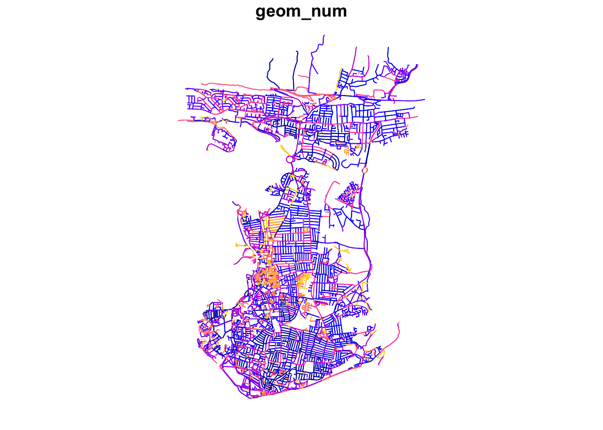
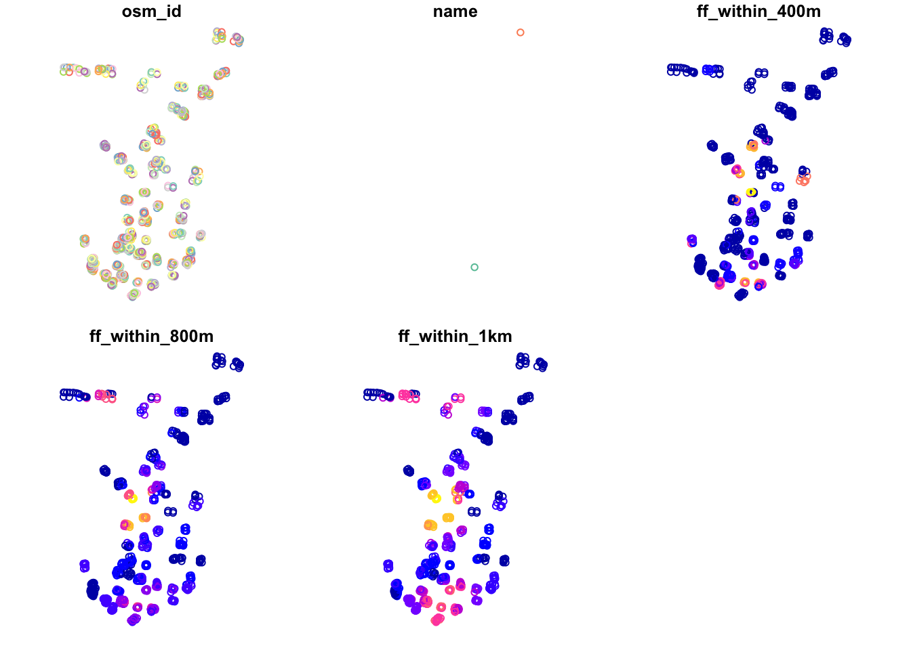
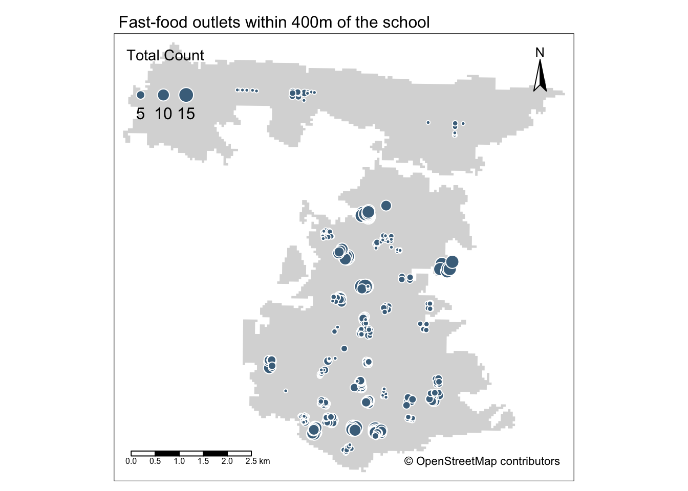

10 Transport Network Analysis
This final week we will cover another type of data: network data. We will take a look at different types of network analysis and how they apply to different applications and can be used within spatial analysis. For our practical component, we will look at current some approaches to analyse road networks in R using the dodgr library to calculate the network distance between two points (i.e. an Origin and a Destination). These distances can then be used to calculate the number of X resource (e.g. fast-food outlets) within a certain distance of a POI, e.g. a school or population-weighted centroid.
10.1 Reading list
Essential readings
- Geurs, K., Van WEe, B. 2004. Accessibility evaluation of land-use and transport strategies: review and research directions. Journal of Transport Geography 12(2): 127-140. [Link]
- Neutens, T. Schwanen, T. and Witlox, F. 2011. The prism of everyday life: Towards a new research agenda for time geography. Transport Reviews 31(1): 25-47. [Link]
- Schwanen, T. and De Jong, T. 2008. Exploring the juggling of responsibilities with space-time accessibility analysis. Urban Geography 29(6): 556-580. [Link]
Suggested readings
- Van Dijk, J., Krygsman, S. and De Jong, T. 2015. Toward spatial justice: The spatial equity effects of a toll road in Cape Town, South Africa. Journal of Transport and Land Use 8(3): 95-114. [Link]
- Van Dijk, J. and De Jong, T. 2017. Post-processing GPS-tracks in reconstructing travelled routes in a GIS-environment: network subset selection and attribute adjustment. Annals of GIS 23(3): 203-217. [Link]
10.2 Network Analysis
The term ‘network analysis’ covers a wide range of analysis techniques, from complex network analysis, social network analysis, link analysis, as well as road network analysis.
A network or network graph is constituted by a collection of vertices that are connected to one another by edges. Note, vertices may also be called nodes or points, whilst edges may be called links or lines. Within social network analysis, you may find the terms actors (the vertices) and ties or relations (the edges) also used.

Figure 10.1: Visualising networks through vertices and edges.
Understanding that networks are formed through the connections of vertices and edges, we can think of many naturally and manmade occurring networks that also have a precise geography to them (i.e. their distribution can be mapped directly within geographic space), including rivers connected with tributaries and animal tracks, to electricity pylons and cables and our road and street networks that form crucial parts of our infrastructure.
The latter, in particular, have been a substantial focus of those working within spatial analysis over the last two decades, particularly with routing applications now dominating much of our day-to-day technology, from personal route-planning and ride-share apps to large-scale logistics and infrastructure applications, including the delivery operations behind all of our online shopping and even Scotland’s Trunk Road Gritters.
Alongside this development of routing applications, GIS analysts, geographers and public health specialists have also identified the utility of network analysis within geographic space to calculate distance-based measurement and coverage buffers that can be used as part of accessibility studies that look to understand the provision of a specific resource (e.g. greenspaces, hospitals or even fast-food stores) to a certain area of population.
10.2.1 Accessibility to fast-food outlets
For this week’s practical, we will be using Portsmouth in the UK as our area of interest for our analysis. Portsmouth is located on the south coast of the UUK, and is actually the only city in the UK whose population density exceeds that of London (in 2011). One of the reasons is that the city primarily occupies an outcrop of land on the south-coast (an island called Portsea Island), and extends only slightly into the north, past the M27. There are lots of geographical issues and challenges within the city that you could investigate, including weaknesses in Portsmouth’s current road provision - there are only three main roads in and out of the island!
One prominent topic within the city is the issue of public health and childhood obesity. According to figures released in March 2020 by Public Health England, more than one in three school pupils are overweight or obese by the time they finish primary school within the city - higher than the national average of one in four. One potential contributor to the health crisis is the ease and availability of fast-food in the city. From the local newspaper in the city, the Portsmouth News, Healthwatch Portsmouth Chairman Roger Batterbury was quoted: ‘For people in areas of deprivation, every penny counts and when it comes to buying food, the cheapest option is important but that is rarely the healthy choice.’ See the original article here.
The City Council itself has aimed to address the issue by banning new fast-food takeaways within a 400m range of schools – it started with a pilot at Arundel Court Primary Academy in Landport in September 2019. Since the pilot, no new hot food takeaways will be able to open within a 400m radius of the school. To assess the likely impact of this policy, we will investigate the accessibility of fast-food outlets for school children - we want to know if there is a geography to accessibility that could be used within future analysis to understand whether certain socio-economic demographics are more exposed to fast-food then others. We will measure accessibility by understanding how many fast-food outlets are within specific walking distances of each school, starting at 400m, then 800m and finally a 1km walking distance. We will then aggregate these counts at the Lower Super Output Area (LSOA) and compare these results across the city.
To get this data ready for our spatial and socio-economic analyses, we will need to first calculate the distances between our schools and fast-food outlets. This involves calculating the shortest distance a child would walk between a school and a fast-food outlet, using roads or streets. This means we need to conduct a road network analysis between each school and fast-food outlet.
10.2.2 Housekeeping
Let’s get ourselves ready to start our practical by first adding our relevant libraries, downloading the relevant data and loading this within our script. Open a new script (preferably within your GEOG0030 project) and save this script as wk10-fastfood-analysis.r. At the top of your script, add the following metadata (substitute accordingly):
# Analysing distance between schools and fast-food outlets in Portsmouth
# Data: January 2022
# Author: JustinFor our network analysis, we will be using the dodgr library for calculating Distances On Directed Graphs. Prior to the creation of dodgr, this analysis would have been a little more complex to do. Whilst R has had many network analysis libraries, the majority of these focus on utilising networks in graphical spaces, rather than geographical. Please install the dodgr library prior to continuing.
Note
All calculations within the dodgr library currently need to be run in WGS84/4236. This is why we do not transform the CRS of our data in this practical.
# libraries
library(tidyverse)
library(sf)
library(tmap)
library(osmdata)
library(dodgr)10.2.3 Loading data
The first data set we need to download will help with the visualisation of our results: boundary data that contains an outline of Portsmouth.
| File | File Type | Link |
|---|---|---|
| Major towns and cities boundaries 2015 | shp |
Download |
Make sure you download the shapefile and store it within an outline folder in your data/raw directory. We then need to load it into our script and filter the full data set to only contain the city of Portsmouth:
# load major towns and cities, filter Portsmouth
portsmouth_city <- st_read("data/raw/outline/Major_Towns_and_Cities__December_2015__Boundaries.shp",
stringsAsFactors = FALSE) %>%
filter(tcity15nm == "Portsmouth")## Reading layer `Major_Towns_and_Cities__December_2015__Boundaries' from data source `/Users/justinvandijk/Dropbox/UCL/Web/jtvandijk.github.io/GEOG0030/data/raw/outline/Major_Towns_and_Cities__December_2015__Boundaries.shp'
## using driver `ESRI Shapefile'
## Simple feature collection with 112 features and 5 fields
## Geometry type: MULTIPOLYGON
## Dimension: XY
## Bounding box: xmin: -4.204842 ymin: 50.34101 xmax: 1.378014 ymax: 55.03117
## Geodetic CRS: WGS 84To create our network and Origin-Destination data sets, we will need to first download data directly from OpenStreetMap using a set of specific queries. Once our data is downloaded, we will then need to extract the data from our query results.
We will go ahead and start with downloading and extracting our road network data. First, to download the data, we will again use the osmdata library and the add_osm_feature() function. To use the function, we need to provided it with either a bounding box of our area of interest (AOI) or a set of points, from which the function will create its own bounding box. You can find out more about this and how to construct your queries in the data vignette.
To download our road network dataset, we first define a variable to store our bounding box coordinates, p_bbox(). We then use this within our OSM query to extract specific types of road segments within that bounding box - the results of our query are then stored in an osmdata object. We will select all OSM features with the highway tag that are likely to be used by pedestrians (e.g. not motorways).
# define our bbox coordinates for Portsmouth
p_bbox <- c(-1.113197, 50.775781, -1.026508, 50.859941)
# pass bounding box coordinates into the OverPassQuery (opq) function only
# download features that are not classified as motorway
osmdata <- opq(bbox = p_bbox) %>%
add_osm_feature(key = "highway", value = c("primary", "secondary", "tertiary",
"residential", "path", "footway", "unclassified", "living_street", "pedestrian")) %>%
osmdata_sf()You should now see an osmdata variable appear in your environment window. The osmdata object contains the bounding box of your query, a time-stamp of the query, and then the spatial data as osm_points, osm_lines, osm_multilines and osm_polgyons (which are listed with their respective fields also detailed). Some of the spatial features maybe empty, depending on what you asked your query to return. Our next step therefore is to extract our spatial data from our osmdata object to create our road network data set. This is in fact incredibly easy, using the traditional $ R approach to access these spatial features from our object.
Deciding what to extract is probably the more complicated aspect of this - mainly as you need to understand how to represent your road network, and this will usually be determined by the library/functions you will be using it within. Today, we want to extract the edges of the network, i.e. the lines that represent the roads, as well as the nodes of the network, i.e. the points that represent the locations at which the roads intersect. For our points, we will just keep the osm_id data field, just in case we need to refer to this later. For our lines, we will keep a little more information that we might want to use either within our road network or analysis, including the type of road, what the maximum speed is on the road, and whether the road is one-way or not.
# extract the points, with their osm_id.
ports_roads_nodes <- osmdata$osm_points[, "osm_id"]
# extract the lines, with their osm_id, name, type of highway, max speed and
# oneway attributes
ports_roads_edges <- osmdata$osm_lines[, c("osm_id", "name", "highway", "maxspeed",
"oneway")]To check our data set, we can quickly plot the edges of our road network using the plot() function:
plot(ports_roads_edges, max.plot = 1)
Because we are focusing on walking, we will overwrite the oneway variable by suggesting that none of the road segments are restricted to oneway traffice.
# overwrite oneway default
ports_roads_edges$oneway <- "no"Now we have the network edges, we can turn this into a graph-representation that allows for the calculation of network-based accessibility statistics.
10.3 Accessibility in Portsmouth
Before we construct our graph, we need to also create our ORIGIN and DESTINATION points, i.e. the data points we wish to calculate the distances between. As we will use the dodgr_dists() function to calculate these distances, according to the dodgr documentation, these points need to be in either a vector or matrix format, containing the two coordinates for each point for the origins and for the destinations.
For our Portsmouth scenario, we are interested in calculating the shortest distances between schools and fast-food outlets, therefore we need to download these data sets - again we will turn to OpenStreetMap. Following a similar structure to our query above, we will use our knowledge of OpenStreetMap keys and values to extract the points of origins (schools) and destinations (fast-food outlets) we are interested in,:
# download schools from OSM
schools <- opq(bbox = p_bbox) %>%
add_osm_feature(key = "amenity", value = "school") %>%
osmdata_sf()
# download fast-food outlets
ff_outlets <- opq(bbox = p_bbox) %>%
add_osm_feature(key = "amenity", value = "fast_food") %>%
osmdata_sf()We also need to then follow a similar extraction of our two data sets from the osmdata object as we did for our road data set:
# extract school points
ports_schools <- schools$osm_points[, c("osm_id", "name")]
# extract fast-food outlet points
ports_ff <- ff_outlets$osm_points[, c("osm_id", "name")]We now have our road network data and our Origin-Destination points - we are now ready to construct our network graph and run our network analysis.
Note
In this analysis, we are highly reliant on the use of OpenStreetMap to provide data for both our Origins and Destinations. Whilst in the UK OSM provides substantial coverage, its quality is not always guaranteed. As a result, to improve on our current methodology in future analysis, we should investigate into a more official school data set or at least validate the number of schools against City Council records. The same applies to our fast-food outlets.
With any network analysis, the main data structure is a graph, constructed by our nodes and edges. To create a graph for use within dodgr, we pass our ports_roads_edges() into the weight_streetnet() function. The dodgr library also contains weighting profiles, that you can customise, for use within your network analysis. These weighting profiles contain weights based on the type of road, determined by the type of transportation the profile aims to model. Here we will use the weighting profile foot, as we are looking to model walking accessibility.
# create network graph using edge data, with the foot weighting profile
graph <- weight_streetnet(ports_roads_edges, wt_profile = "foot")Once we have our graph, we can then use this to calculate our network distances between our OD points. One thing to keep in mind is that potentially not all individual components in the network that we extracted are connected, for instance, because the bounding box cut-off the access road of a cul-de-sac. To make sure that our entire extracted network is connected, we now extract the largest connected component of the graph. You can use table(graph$component) to examine the sizes of all individual subgraphs. You will notice that most subgraphs consist of a very small number of edges.
Note
The dodgr package documentation explains that components are numbered in order of decreasing size, with $component = 1 always denoting the largest component. Always inspect the resulting subgraph to make sure that its coverage is adequate for analysis.
# extract the largest connected graph component
graph_connected <- graph[graph$component == 1, ]
# inspect number of remaining road segments
nrow(graph_connected)## [1] 53980# inspect on a plot
plot(dodgr_to_sf(graph_connected), max.plot = 1)
Now we have our connected subgraph, will can use the dodgr_distances() function to calculate the network distances between every possible Origin and Destination. In this function, we first pass our graph, then our Origin points (schools), in the from argument, and then our Destination points (fast-food outlets), in the to argument. One thing to note is our addition of the st_coordinates() function as we pass our two point data sets within the from and to functions as we need to supplement our Origins and Destinations in a matrix format. For all Origins and Destinations, dodgr_distances() will map the points to the closest network points, and return corresponding shortest-path distances.
# create a distance matrix between schools and fast-food stores
sch_to_ff_calc <- dodgr_distances(graph_connected, from = st_coordinates(ports_schools),
to = st_coordinates(ports_ff), shortest = TRUE, pairwise = FALSE, quiet = FALSE)Let’s inspect the first row of our output.
# inspect
head(sch_to_ff_calc, n = 1)## 1 2 3 4 5 6 7 8
## 1 3962.537 2090.726 6545.417 9415.661 10968.56 2197.515 11908.91 2291.244
## 9 10 11 12 13 14 15 16
## 1 692.3284 1671.141 1674.336 1691.717 1671.141 2090.726 2090.726 2061.18
## 17 18 19 20 21 22 23 24
## 1 3962.537 2323.449 3962.537 3962.537 3335.304 1697.704 580.8907 7209.363
## 25 26 27 28 29 30 31 32
## 1 3607.952 1357.423 3317.865 340.6474 1101.115 10861.57 2961.145 2718.268
## 33 34 35 36 37 38 39 40
## 1 3500.483 2328.908 2816.301 2918.239 2918.239 735.5805 3395.716 6229.676
## 41 42 43 44 45 46 47 48
## 1 3391.215 9238.337 9439.853 9305.444 9549.248 1629.389 3517.55 2399.396
## 49 50 51 52 53 54 55 56
## 1 7170.083 9045.745 9470.2 9397.154 6481.916 6481.916 6466.598 6466.598
## 57 58 59 60 61 62 63 64
## 1 762.1435 2524.406 1067.077 1009.477 1009.477 1967.535 1418.994 2961.145
## 65 66 67 68 69 70 71 72
## 1 1244.659 2154.569 354.1211 688.6854 2161.812 2204.19 2118.189 11818.93
## 73 74 75 76 77 78 79 80
## 1 4826.28 2736.054 843.9919 614.8746 788.2592 2584.125 2664.845 728.304
## 81 82 83 84 85 86 87 88
## 1 11908.91 11908.91 11908.91 11997.89 11997.89 11997.89 11908.91 11908.91
## 89 90 91 92 93 94 95 96
## 1 11908.91 11908.91 11908.91 11908.91 11908.91 11388.64 6543.503 6587.764
## 97 98 99 100 101 102 103 104
## 1 6587.764 6312.812 3962.537 3962.537 4231.824 5927.351 3838.294 580.8907
## 105 106 107 108 109 110 111 112
## 1 597.1904 2652.993 5117.168 5314.69 5056.003 924.6992 5056.003 4042.625
## 113 114 115 116 117 118 119 120
## 1 752.9266 556.4247 713.106 622.4875 597.1904 1224.832 3336.312 3292.987
## 121 122 123 124 125 126 127 128
## 1 5466.739 6632.675 6632.675 6632.675 6668.342 6632.675 6632.675 6632.675
## 129 130 131 132 133 134 135 136
## 1 6624.566 6668.342 6668.342 6624.566 6668.342 6668.342 6668.342 6624.566
## 137 138 139 140 141 142 143 144 145
## 1 6668.342 6668.342 12411.13 9712.195 9712.195 5499.831 9399.05 9399.05 9350.67
## 146 147 148 149 150 151 152 153 154
## 1 8631.033 9350.67 9399.05 12089.7 12089.7 12096.98 12089.29 9615.781 3584.312
## 155 156 157 158 159 160 161 162
## 1 814.6745 5705.933 904.4865 904.4865 904.4865 4947.39 4966.305 857.6564
## 163 164 165 166 167 168 169 170
## 1 3212.692 3394.656 11487.82 4877.251 1811.892 9227.439 1663.962 9666.448
## 171 172 173 174 175 176 177 178
## 1 9726.317 4684.524 3173.789 3458.505 3120.884 5971.013 9699.805 9726.317
## 179 180 181 182 183 184 185 186
## 1 5236.027 3963.426 9287.023 6038.606 5969.851 8972.334 6653.714 5892.423
## 187 188 189 190 191 192 193 194
## 1 10837.05 1505.825 4993.058 11553.03 1573.278 5475.919 1802.432 3105.049
## 195 196 197 198 199 200 201 202
## 1 2944.606 9169.722 4735.419 4966.305 4038.156 13220.8 5475.919 3292.987
## 203 204 205 206 207 208 209 210
## 1 3292.987 556.4247 788.2592 10178.36 5099.112 9699.805 9699.805 9699.805
## 211 212 213 214 215 216 217 218
## 1 9712.195 9712.195 9712.195 9712.195 9699.805 9699.805 5998.846 5603.786
## 219 220 221 222 223 224 225 226 227
## 1 4714.954 4038.156 4884.033 4883.197 1543.357 1510.18 1558.6 4941.797 4946.512
## 228 229 230 231 232 233 234 235 236
## 1 4186.433 3517.55 6044.226 5449.931 5314.69 5314.69 5314.69 5314.69 5314.69
## 237 238 239 240 241 242 243 244 245
## 1 5314.69 5314.69 4993.058 6269.88 5373.399 4735.419 5816.018 6632.675 4922.658
## 246 247 248 249 250 251 252 253
## 1 11623.3 11647.88 5056.003 5056.003 5056.003 5056.003 5099.112 5128.852
## 254 255 256 257 258 259 260 261
## 1 5099.112 5128.852 5128.852 5123.116 11908.91 6545.417 6545.417 6525.185
## 262 263 264 265 266 267 268 269
## 1 6545.417 6545.417 6525.185 4805.495 4966.305 11908.91 4771.743 4359.231
## 270 271 272 273 274 275 276 277 278
## 1 1129.667 1302.44 1302.44 1320.89 3340.235 4338 1330.855 1121.068 5294.833
## 279 280 281 282 283 284 285 286
## 1 11997.89 12089.7 3001.608 6481.916 5782.611 3381.486 3163.546 11647.88
## 287 288 289 290 291 292 293 294
## 1 2918.239 1674.582 2683.729 5834.882 5733.333 5735.212 5834.882 5834.882
## 295 296 297 298 299 300 301 302
## 1 4956.136 1128.579 9300.57 2058.099 7830.951 1113.875 1091.231 1091.231
## 303 304 305 306
## 1 1121.068 1091.231 4656.447 2204.19Note
The dodgr vignette further notes that
a distance matrix obtained from running dodgr_distances on graph_connected should generally contain no NA values, although some points may still be effectively unreachable due to one-way connections (or streets). Thus, routing on the largest connected component of a directed graph ought to be expected to yield the minimal number of NA values, which may sometimes be more than zero. Note further that spatial routing points (expressed as from and/or to arguments) will in this case be mapped to the nearest vertices of graph_connected, rather than the potentially closer nearest points of the full graph.
Our output shows the calculations for the first school - and the distances between the school and every fast-food outlet. Because we manualy overwrote the values for all oneway streets as well as that we extracted the larges connected graph only, we currently do not seem to have any NA values.
The next step of processing all depends on what you are trying to assess - here we want to understand which schools have a higher accessibility of fast-food outlets compared to others, quantified by how many outlets are within walking distance of specific distances. We will therefore look to count how many outlets are with walking distance from each school and store this as a new column within our ports_school data frame.
# fastfood outlets within 400m
ports_schools$ff_within_400m <- rowSums(sch_to_ff_calc <= 400)
# fastfood outlets within 800m
ports_schools$ff_within_800m <- rowSums(sch_to_ff_calc <= 800)
# fastfood outlets within 1000m
ports_schools$ff_within_1km <- rowSums(sch_to_ff_calc <= 1000)We can then look at our outputs quickly again using the plot() function.
# set CRS for Portsmouth schools
ports_schools <- st_set_crs(ports_schools, 4326)
# plot results
plot(ports_schools)
Just from this simple plot, we can see across our distances some clear geographical patterns in accessibility of fast-food outlets for schools. We can improve this plot by making a proportional symbols map that show the different counts of fast-food outlets for each school in Portsmouth. Make sure you have loaded the Portsmouth City outline at the beginning of this practical.
# ensure tmap mode is set to plot
tmap_mode("plot")
# create proportional symbol map
tm_shape(portsmouth_city) +
tm_fill(palette = "grey") +
tm_shape(ports_schools) +
tm_bubbles(size = "ff_within_400m", col = "skyblue4",
style = "pretty", scale = 1, border.col = "white",
title.size = "Total Count") +
tm_layout(legend.position = c("left", "top"), legend.text.size = 1,
main.title = "Fast-food outlets within 400m of the school",
main.title.size = 1) +
tm_compass(type = "arrow", position = c("right", "top")) +
tm_scale_bar(position = c("left", "bottom")) +
tm_credits("© OpenStreetMap contributors")
The map shows that areas with greater access/exposure to fast-food outlets (denoted by the larger symbols) appear to be within the city centre and in the south, whereas those schools in the north have less exposure. However, if we head back to the interactive map at the start of this practical, you will be able to see that these two areas correlate quite well with the more commercial areas within Portsmouth, the high street and an area known as Gunwharf Quays. This suggests there are complexities in understanding accessibility as well as trying to apply specific policies such as banning new fast-food takeaways within a 400m range of school, particularly if these schools are in commercial areas.
10.4 Assignment
Now you have the number of fast-food outlets within specific distances from each school, the assignment for this week is to aggregate fast-food accessibility at the LSOA scale. After aggregating these distance calculations to the LSOA scale, you will then compare accessibility to the 2019 Index of Multiple Deprivation. In order to do this you will, at least, need to take the following steps:
- Download and extract the 2011 LSOA boundaries of Portsmouth.
- Download the 2019 Index of Multiple Deprivation and prepare the file so that it can be read into R (i.e. create a
csv). - Decide on an aggregation measure, such as:
- The average number of fast-food restaurants within X distance of a school within each LSOA.
- The average distance a fast-food restaurant is from a school within each LSOA.
- The (average) shortest distance a fast-food restaurant is from a school within each LSOA.
- The minimum shortest distance a fast-food outlet is from a school within each LSOA.
- Create a choropleth map of aggregate accessibility.
- Join the 2019 Index of Multiple Deprivation data to your LSOA data set.
- For each IMD decile, calculate the average for your chosen aggregate measure and produce a table. Are fast-food restaurants, on average, more accessible for students at schools that are located within LSOAs with a lower IMD decile when compared to students at schools that are located within LSOAs with a higher IMD decile?
Note
This skills and steps required for this analysis are not just based on this weeks practical, but you will have to combine all your knowledge of coding and spatial analysis you have gained over the past ten weeks!
10.5 Before you leave
Having finished this final tutorial on transport network analysis and, hopefully, having been able to independently conduct some further area-profiling using IMD deciles, you have now reached the end of Geocomputation!